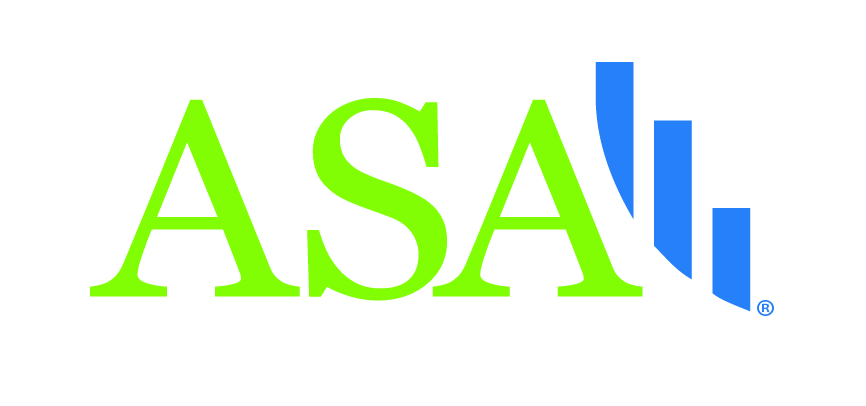

Sponsors
We would like to thank our sponsors ASA DataFest@UofT: COVID-19 Data Challenge!
The Department of Statistical Sciences, University of Toronto initially formed as a graduate department in 1977, the Department of Statistics began operating as an independent department in 1979 under the inaugural chairmanship of Donald A.S. Fraser. The University of Toronto has many notable alumni that are great leaders in statistical sciences, including Art Dempster, Rudy Beran, David Brillinger, John Chambers, Steve Fienberg, Daryl Pregibon, Mary Thompson, Ross Prentice, Rob Tibshirani, and Larry Wasserman. The explosion of interest in data science has triggered an accelerated expansion of the department’s inter-disciplinary research and a rapid growth of our community – from faculty to undergraduate and graduate students. Today, our enrolment rate is among the highest in North America.
The Faculty of Arts and Science, University of Toronto is the heart of Canada’s leading university and one of the most comprehensive and diverse academic divisions in the world. The strength of Arts & Science derives from the combined excellence of faculty and students in the humanities, sciences and social sciences.

The American Statistical Association is the world’s largest community of statisticians, the “Big Tent for Statistics.” It is the second-oldest, continuously operating professional association in the country. Since it was founded in Boston in 1839, the ASA has supported excellence in the development, application, and dissemination of statistical science through meetings, publications, membership services, education, accreditation, and advocacy.